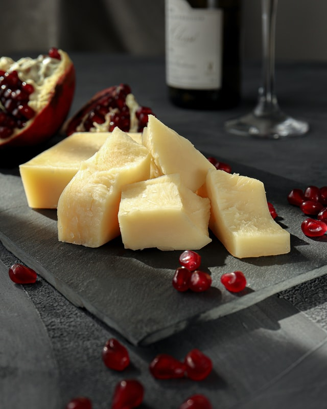
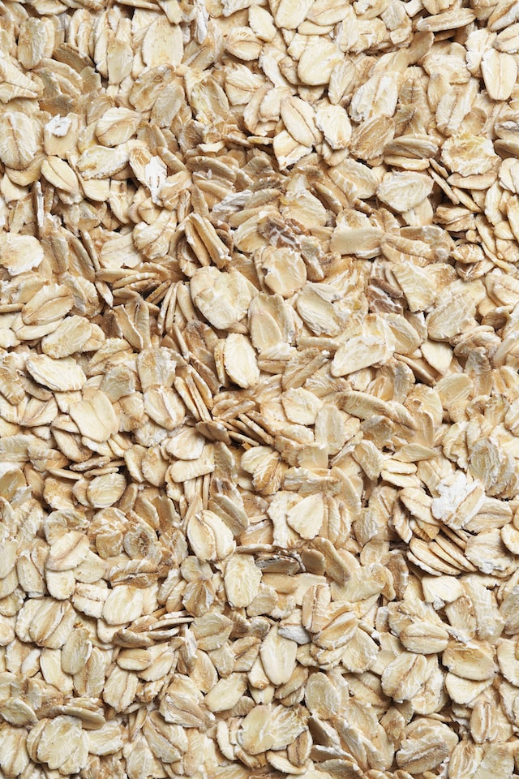

Proteina
-
.jpg)
Es una fuente de vitamina B12; esta vitamina nos ayuda a metabolizar proteínas, a formar glóbulos rojos y a darle mantenimiento al sistema nervioso central. Es rica en zinc, que ayuda a protegernos contra el daño oxidativo, a la cicatrización de la piel y para crear hemoglobina.
$14.000

 (1).jpg)
El consumo de pescado es recomendado para toda la población, por ser una importante fuente de proteínas, además nos aportan vitaminas, minerales y ácidos grasos poliinsaturados, como el omega 3. Estos últimos son esenciales, porque el cuerpo no los produce y es necesario consumirlos a través de la dieta
$10.000
.jpg)
La carne de pollo es fuente importante de nutrientes como proteínas, lípidos, Vitamina 3 y minerales como calcio, hierro, zinc, sodio, potasio y magnesio, entre otros. De fácil digestión. La mayor parte de la grasa corporal del pollo se encuentra en la piel, por lo que al retirarla se reduce el consumo de grasa
$13.000
.jpg)
Tienen proteínas de muy buena calidad y de alto valor biológico. También incluye vitaminas de los grupos A y B. Por último, contiene minerales entre los que destaca el hierro, cuyo origen animal permite una fácil absorción.
$12.000
Tiene más proteína que cualquier cereal ¿Estás tomando las proteínas necesarias? La quinoa tiene entre 12-16 gramos por cada 100. Además, estas proteínas vegetales se consideran de alto valor biológico, ya que contienen todos los aminoácidos esenciales para el ser humano en las proporciones adecuadas.
$1.000
El calcio es el mineral más abundante en nuestro organismo, se encarga de la formación de los huesos y dientes. La principal fuente de calcio es la leche y derivados como el queso, por eso, consumir estos productos es esencial para para prevenir enfermedades óseas como la osteoporosis y mantener una buena densidad en los huesos.
$3.000
Las semillas de cáñamo (cañamón) son extraordinariamente beneficiosas para la salud, ya que contienen todos los aminoácidos y ácidos grasos esenciales necesarios para un cuerpo lleno de vitalidad. Ninguna otra planta tiene proteínas de tan fácil digestión ni una proporción tan perfecta entre los aceites esenciales
$1.200
Te aporta, por ejemplo, muy buenas cantidades de magnesio, cobre, hierro, zinc y vitamina B1, así como pequeñas dosis de calcio, ácido fólico y otras vitaminas del grupo B. Además, es muy rica en manganeso. Y todo esto de forma muy condensada: en poca cantidad y sin aportar demasiadas calorías: unas 110 calorías una ración de 30 gramos de copos de avena.
$4.500